英文字典生成器(Dictionary)
1.软件信息

名称:英文字典生成器
版本:beta版
功能:从英文文本中提取英文单词并生成字典
系统要求:Window10 x64
作者:薛辰立(Jerry_Xue)
联系方式:QQ-1716177017
2.功能介绍
2.1.主页面
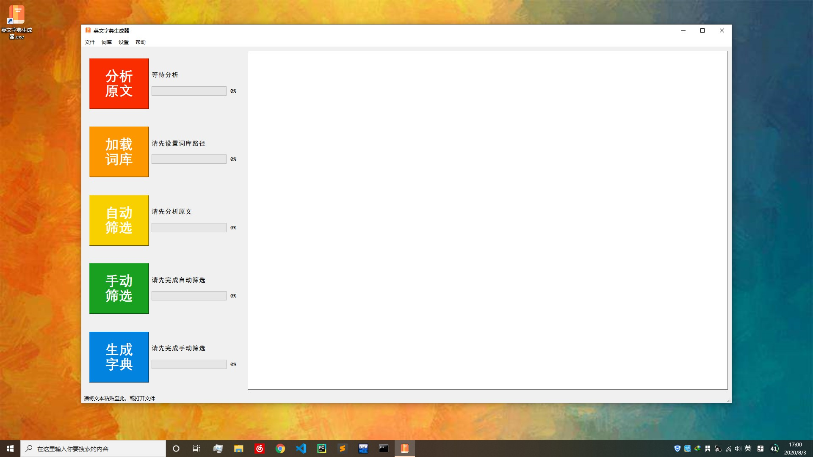
主页面由左侧5个按钮及其配套标签、进度条和右侧的文本框组成，该窗口支持缩放。
2.1.1分析原文
功能:对文本框内的文字进行分析，并将分析结果显示在文本框中
效果:将原文中的所有英文单词提取出来并统一为小写字符；开启"简化"后将对单词进行简化，但会减慢分析速度
展示:
分析前:

分析中:
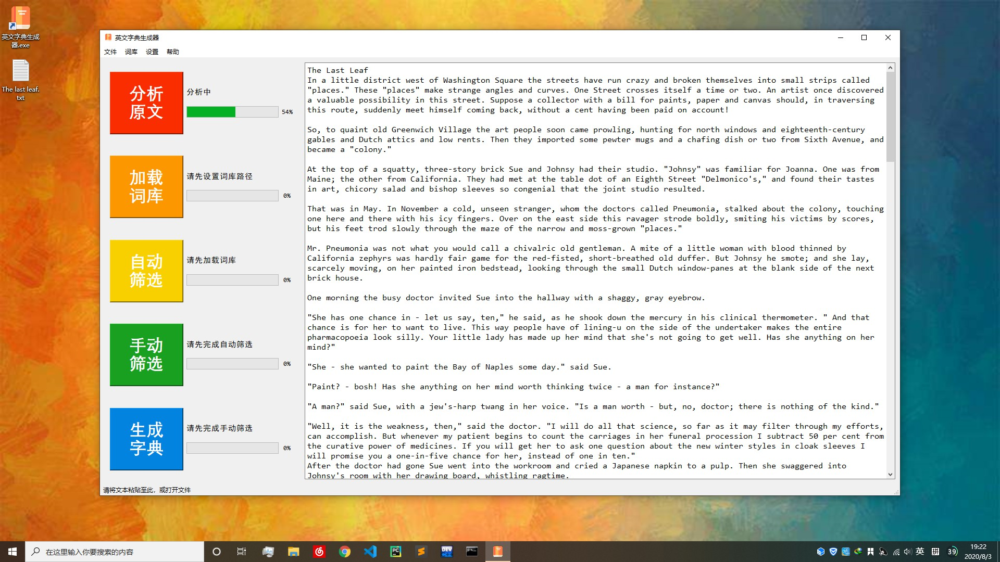
分析后:

2.1.2加载词库
功能:加载.pkl文件中的词库，用于自动筛选
展示:

2.1.3自动筛选
功能:在分析的结果中进行去重操作，并筛去已加载词库中的单词
展示:

2.1.4手动筛选
功能:在自动筛选的结果中手动进行更为精细化的筛选
此功能又分为两种模式:逐个模式和批量模式，默认使用批量模式
2.1.4.1逐个手筛模式
效果:将单词逐个以小窗口的形式呈现，并在呈现同时朗读该单词
操作方法:鼠标点击Y按钮时将去除该单词，点击N按钮时将保留该单词；在键盘上按下Y键、在窗口上单击鼠标左键与点击Y按钮作用相同，在键盘上按下N键、在窗口上单击鼠标右键或直接关闭窗口与点击N按钮作用相同。单击主界面并按下F5可强制结束筛选；不支持暂停
选择建议:在单词较少、视力疲劳、训练手速或消遣时间时可以尝试此模式。朗读音量较小，建议将系统音量调至最大
展示:

2.1.4.2批量手筛模式
功能:将待筛选单词以列表形式呈现
操作方法:勾选出需要去除的单词，按下关闭键以保存
选择建议:单词较多时可以进行较为快速的筛选
展示:


筛选后:

2.1.5生成字典
功能:将筛选出的单词编制为字典，在编制字典前可以选择是否进行检查
此功能又分为两种模式:无页码模式和有页码模式，默认使用无页码模式
2.1.5.1生成字典前检查
功能:检查筛选出的单词是否能查询到音标和词义，检查后生成字典速度会大幅提升
效果:检查完成后在文本框显示出没有音标或词义的单词；可点击手动筛选进行再次处理。如果未查询到词义，则可能拼写有误或为专有名词、古英语、偏僻词等在线词典未收录单词；如果未查询到音标，则可能需将单词调整为原级(可尝试打开"简化"开关重新分析这些单词)
展示:
检查中:

检查结果:
处理检查结果:
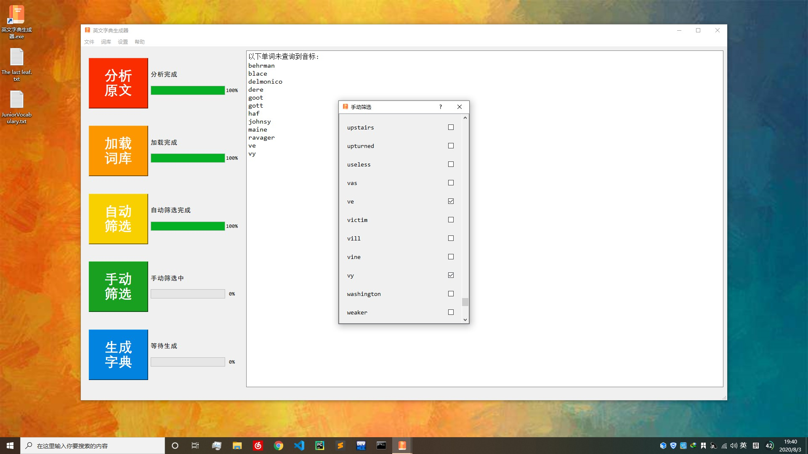
2.1.5.2无页码生成模式
功能:将筛选出的单词制作为字典(不包括目录，页码和每页单词范围)
效果:生成一个.docx文档至输出路径
选择建议:当对字典要求不高、对生成速度要求较高或电脑未安装自带Word软件时建议选择
展示:
制作中:
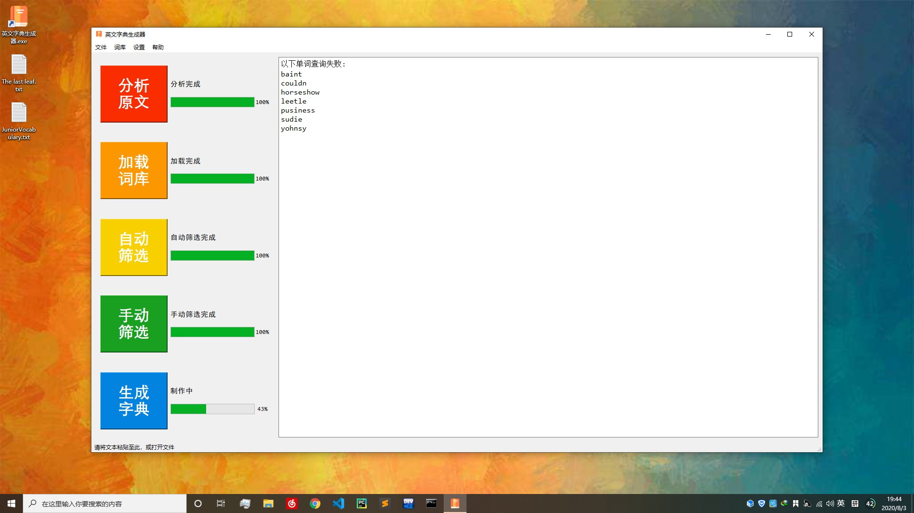
制作完成:


2.1.5.3有页码生成模式
功能:将筛选出的单词制作为一本较为完整的字典
效果:生成一个.docx文档，一个.pdf文档至输出路径
选择建议:当追求完美、时间充裕时可以使用，但注意生成过程中请不要点击屏幕。制作过程中会调用系统自带Word进行辅助，若不慎点击屏幕，请将激活向导、欢迎界面关闭，但不要关闭Word程序，字典能够正常制作，但是屏幕会出现闪烁而引发不适
展示:
制作前提示:
页码添加:
制作完成:
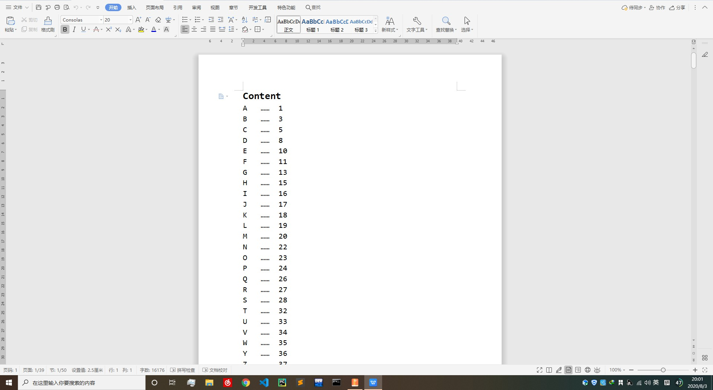
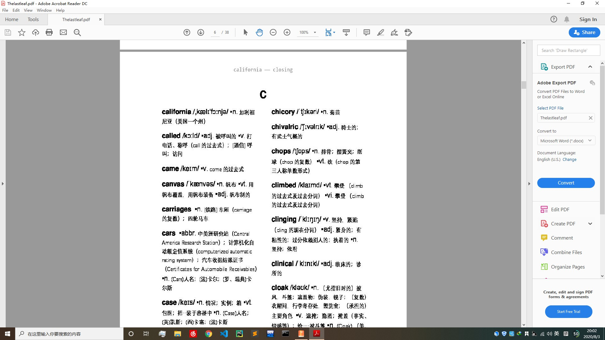
目前，该功能仍存在以下瑕疵:
每页单词范围存在差错:制作过程中写入段落时默认会在段前插入空行而干扰检测，故每个单词从单词词条前的空行开始计算起始
瑕疵示例:

2.2菜单栏
菜单栏位于主页面的顶端，共由4个标签组成
2.2.1文件
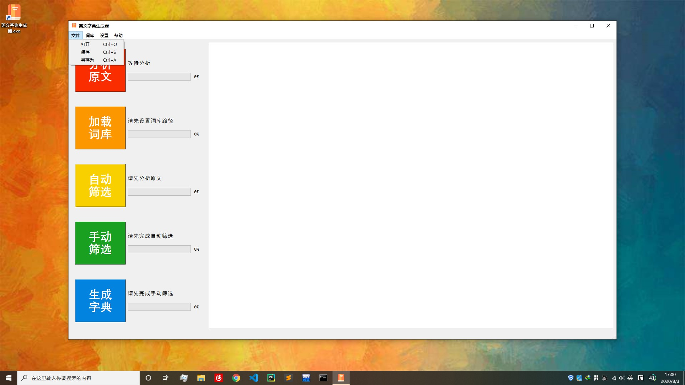
文件菜单包含打开，保存，另存为三个选项，快捷键依次为Ctrl+O,Ctrl+S,Ctrl+A
2.2.1.1打开文件
功能:打开指定位置的.txt文件
效果:将文件内容显示在文本框中
展示:
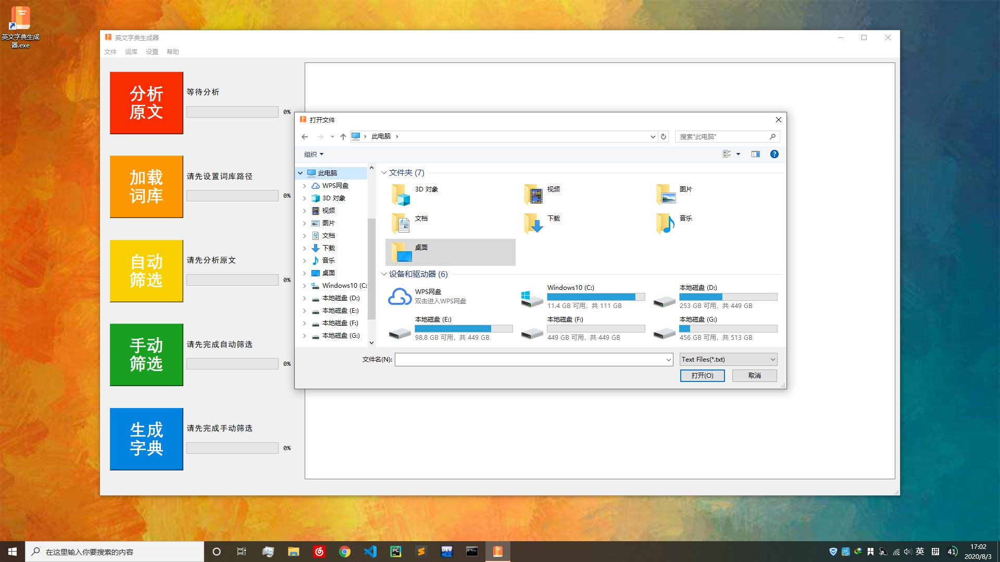
2.2.1.2保存文件
功能:将文本框中的文字保存到指定文件中
效果:若文本由文件打开，则将该文本保存至该文件中；否则效果同另存为
展示:
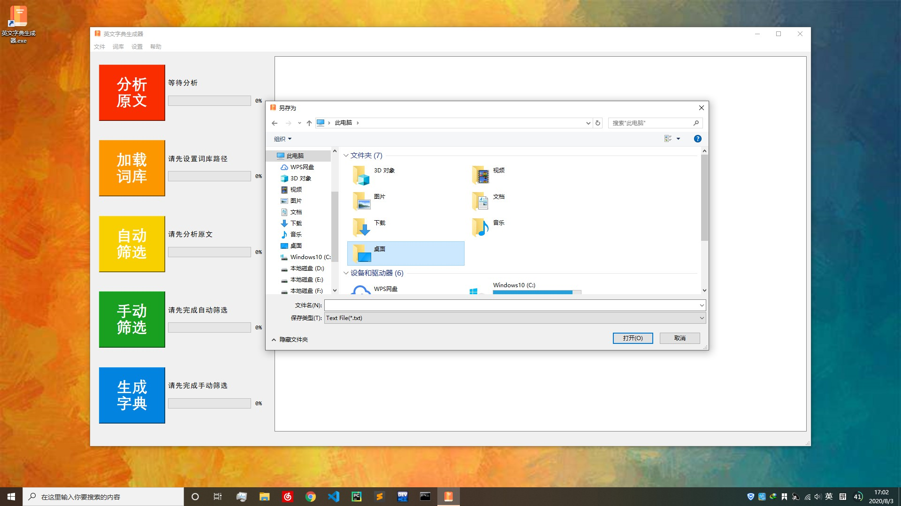
2.2.1.3文件另存为
功能:将文本框中的文字保存到指定文件中
效果:新建一个文件并将文本存入该文件中
2.2.2词库
词库菜单包含新建，合并两个选项，快捷键依次为Ctrl+N,Ctrl+U
2.2.2.1新建词库
功能:将给定文本制为词库
效果:对给定文本进行分析，并将分析结果制为词库
展示:

2.2.2.2合并词库
功能:将指定的两个词库合并
效果:生成一个包含两个词库中单词的新词库文件
展示:
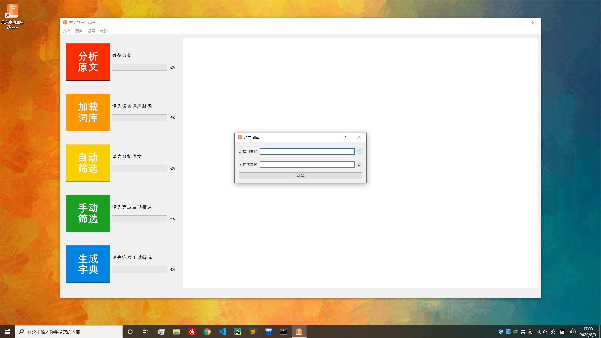
2.2.3设置
设置菜单包含路径，模式两个选项，快捷键依次为Ctrl+P,Ctrl+M
2.2.3.1路径设置
功能:设置词库路径，输出路径以及需要加载的配置路径
效果:设置词库路径后即可加载词库，当词库路径更换时需要重新加载词库、重新筛选；设置输出路径后方可进行字典制作；配置路径默认为程序所在文件夹中的Resources目录下的settings.pkl文件，若更换配置路径，则会从指定的新路径中读取配置(在此窗口中设置的词库路径与输出路径会覆盖原有的配置)，并将配置转存至默认存储位置
展示:

2.2.3.2模式设置
功能:设置制作过程中的一些模式选择
效果:打开简化后，所有的分析操作(包括分析原文和新建词库时的分析)都会对原文进行简化，所谓简化就是尽量将单词的变形(如-ing -s/es -ed)等去除，便于提高自动筛选的效率；手动筛选模式可以在此处设置，效果参见上文2.1.4手动筛选；生成字典前检查可以在此处开启，效果参见上文2.1.5.1生成字典前检查；页眉页脚设置的是生成字典时的有无页码的模式，效果参见上文2.1.5.2无页码生成模式，2.1.5.3有页码生成模式。默认设置为关闭简化、检查与页眉页脚添加，使用批量模式进行手动筛选
展示:
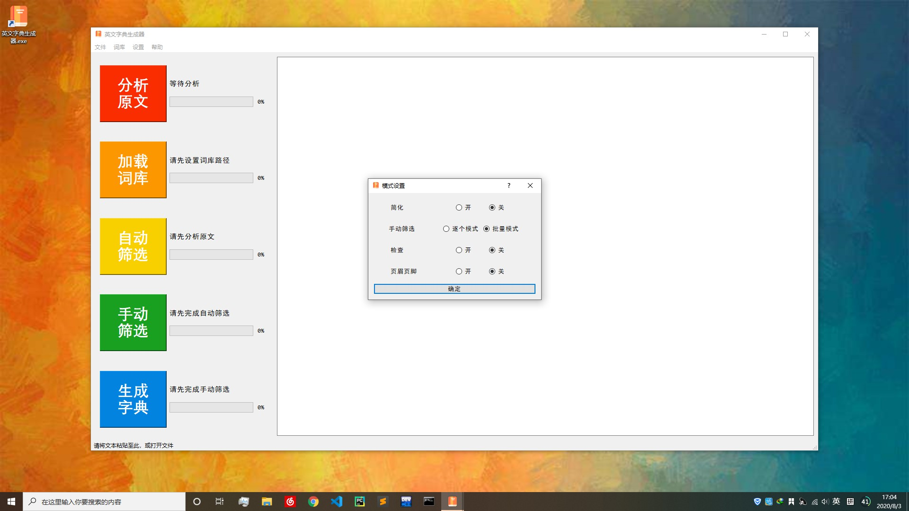
2.2.4帮助

帮助菜单包含查看帮助文档一个选项，快捷键为Ctrl+H
2.2.4.1查看帮助文档
功能:用于帮助文档的查看
效果:打开位于程序所在文件夹中的Resources目录下的helper.html，即本文档
2.3状态栏
状态栏位于主页面的底部，在鼠标悬停在主页面控件上时显示相关信息提示
3.使用教程
在本教程中，我们将为O.Henry的短篇小说The last leaf制作一本专属字典。
使用到的相关资料将存放在程序所在文件夹中的Resources/Sample目录中
3.1首次使用设置
首次使用时，软件会弹出如下窗口:
单击OK后将会弹出路径设置与模式设置的窗口，可参照上文2.2.3.1路径设置、2.2.3.2模式设置进行填写
另外在配置文件(程序所在文件夹中的Resources目录下的settings.pkl文件)被删除或损坏时也会在软件开启时弹出此窗口，设置方式同上
3.2打开原文
单击菜单栏文件-打开或按下键盘上的Ctrl-O进行文件打开，文件打开后将在右侧文本框中显示。这里我们选择打开The last leaf.txt，打开结果如下:
也可以在外部编辑器上打开文本将其复制并粘贴至文本框中
3.3分析原文
单击分析原文按钮，即可进行分析原文操作
分析原文的具体信息参见上文2.1.1分析原文
3.4加载词库
此时无现成词库，需自制词库:
单击菜单栏词库-新建词库，将词库中需要包含的单词粘贴至此。这里我们将JuniorVocabulary.txt中的内容复制并粘贴至新建词库窗口的文本框中，这个文件中包含了中考要求的大部分英语单词，将它制成词库，以便在自动筛选时筛去我们认识的单词
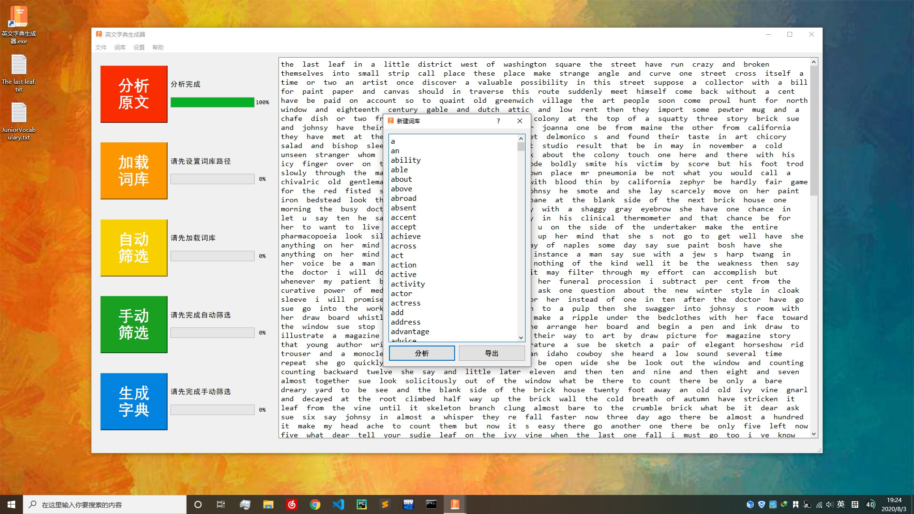
接着我们点击分析，待分析完成后点击导出将这些单词保存到词库文件中去。分析过程中可以在左上角实时查看分析进度

词库制作完成后，我们要设置词库路径，请参见上文2.2.3.1路径设置设置好词库路径
下次打开软件时，词库路径会默认为我们现在设置的路径
路径设置完成后即可加载词库

点击加载词库按钮即可进行加载
3.5自动筛选
词库加载完成后，点击自动筛选以进行基于已加载词库的自动筛选
3.6手动筛选
自动筛选完成后，点击手动筛选以进行更为精细的筛选
更多手动筛选的细节请参照上文2.1.4手动筛选、2.2.3.2模式设置
如下图，我们勾出不需要的单词
勾选完成后，关闭手动筛选窗口以保存结果
3.7生成字典
若打开了检查模式，则会在制作前进行检查(参见2.1.5.1生成字典前检查)
由于软件设计了对已查单词进行保存(未写入文件，软件关闭后即消失)，故检查能提升制作速度，且连续制作时检查速度也能有所提升
生成字典时有两种模式选择，具体参见上文2.1.5.2无页码生成模式，2.1.5.3有页码生成模式，2.2.3.2模式设置
在这里我们暂且使用无页码生成模式，制作完成后结果如下:
可以看到，得到的字典并没有目录和页眉页脚，并不是非常完整，但速度较快
使用有页码生成模式请参见上文2.1.5.3有页码生成模式
另外，在进行有页码生成模式时，保存路径请不要带有空格；请不要点击鼠标。软件设计了调用系统自带的Word对文本进行相应的检测，此时系统自带的Word正在隐式的运行，点击鼠标会使其变得显式；倘若不慎点击，请将弹出的激活向导、欢迎页面等阻碍Word正常运行的窗口关闭即可，但不要关闭Word文档，否则会导致制作终止。在制作过程中，也请不要关闭软件，否则下次制作时会引发错误，解决方法时打开任务管理器，终止掉系统自带Word在后台的进程。请不要在制作过程中打开正在制作的文档，这样也会引发错误。
在有页码生成模式制作完成后，会进行页码添加操作，若文件过大，程序窗口可能会卡顿，请不要用鼠标去点击卡顿的程序窗口，会引发程序崩溃。
3.8打印字典
字典生成后，可根据个人喜好将其打印。
建议将其打印为小册子，方便随时携带与翻阅。